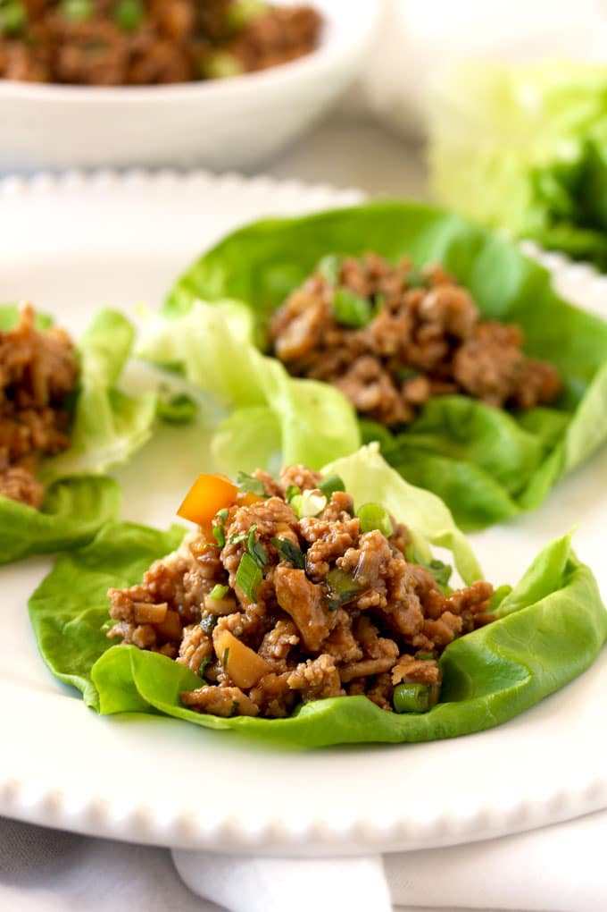

Lettuce Wraps

Description:
Use any ground meat, and any veggies. The trick to this dish is not overcooking the veggies and retaining lots of texture variation.
Ingredients
- ground meat
- soy sauce
- black vinegar
- 1 large onion, chopped
- garlic, minced
- water chestnuts, bean sprouts, zucchini, peppers, mushrooms
- optional: sesame seeds and/or peanuts
Steps
- Brown meat
- START HERE
Notes
- Aromatics: onions, celery, carrots, peppers, whole spices.
- Whole spices: peppercorn, bay leaf (break into smaller pieces), whole dried peppers, cinnamon sticks, star anise, cardamom, coriander seed, mustard seed.
- Spices such as coriander seed and cardamom need to be toasted in a dry pan first.
- Cornstarch slurry: In a small bowl, moisten about a tablespoon of cornstarch with two tablespoons of COLD water. Stir. Add slowly to whatever you are trying to thicken; it will thicken when the liquid reaches boiling temperature.